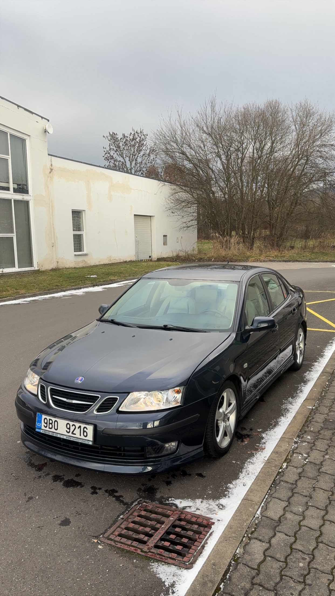

Car mechanic
I work one of my part time jobs as Car mechanic, where I learned teamwork and mechanical thinking
Student portfolio
Welcome to my personal student portfolio. On this website, let me introduce myself, my skills, practical experiences, and my hobbies.
Read moreAbout me
My name is Jáchym Krčmář. I am 21 years old and I live in Sloup v Čechách. I study at Technical University of Liberec.
I have a strong passion for cars and figuring out how things work under the hood. I enjoy taking on practical challenges and learning through hands-on projects, which allows me to constantly improve my technical skills.
My Experience
Those are my work experiences, besides all of this I study Mechatronics at Technical University of Liberec and work on my Saab. My Calendar is pretty stuffed.
I work one of my part time jobs as Car mechanic, where I learned teamwork and mechanical thinking
I love cars and I love when they are pristine. In my free time i professionally clean cars for people close to me.
Pretty straight forward, but here I also learned a lot of teamwork and got quite big driving experience

Working on my car and figuring things out is my passion.
My Hobbies
I enjoy doing all the maintenance and drive my Saab 9-3 aero, its a pretty rare car, that you do not meet everyday. The fact, that i worked very hard for it makes me love it so much. But it also breaks my heart seeing it disassembled on my yard.
Besides technical projects, I also enjoy listening to metal music, going to the gym and spending time with my girlfriend, which helps me relax and clear my head.
Contact
If you want to get in touch with me, feel free to reach out at:
jachym.krcmar@tul.cz